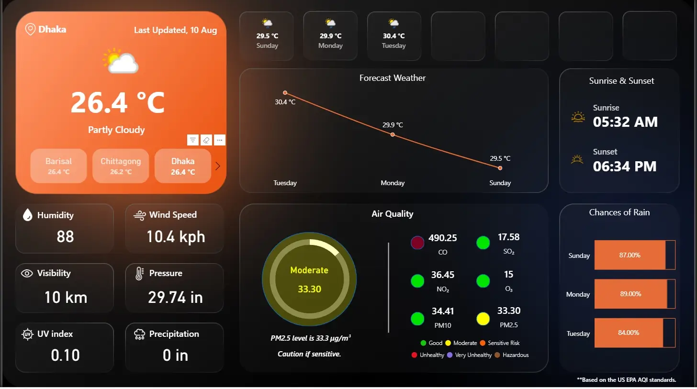

Project Details
Weather Dashboard
Project Overview
The Weather Dashboard on Power BI delivers real-time weather insights collected from a live weather API. Designed for daily automatic refresh, it enables users to monitor current and forecasted conditions with clear and interactive visualizations. This dashboard consolidates essential weather data in one place, making it useful for personal planning, outdoor event management, and climate tracking.

Situation
With climate conditions varying throughout the day, quick and accurate access to weather information is essential. Traditional weather updates may be delayed or scattered across multiple sources, making it harder for users to make timely decisions.
Task
The aim was to create a central, real-time dashboard that updates automatically and integrates all weather indicators—temperature, humidity, wind speed, precipitation, and forecasts—into a single, interactive interface.
Action
The dashboard includes the following key features:
- Real-time temperature readings with daily highs and lows.
- Humidity and wind speed tracking for better environmental awareness.
- Precipitation probability and rainfall amounts for event and travel planning.
- 7-day forecast visualization for forward-looking decisions.
- Daily automatic refresh to ensure accuracy of data pulled from the live weather API.
The dashboard’s interactive visuals allow users to filter by location and date, compare historical patterns, and identify weather trends quickly.
Result
The Weather Dashboard provides:
- Reliable, real-time data for both casual users and professionals.
- Time savings by consolidating all weather information in one interface.
- Enhanced decision-making through accurate and updated climate metrics.
By combining automation, real-time updates, and user-friendly design, the Weather Dashboard ensures that users can make informed decisions based on the most up-to-date weather information available.